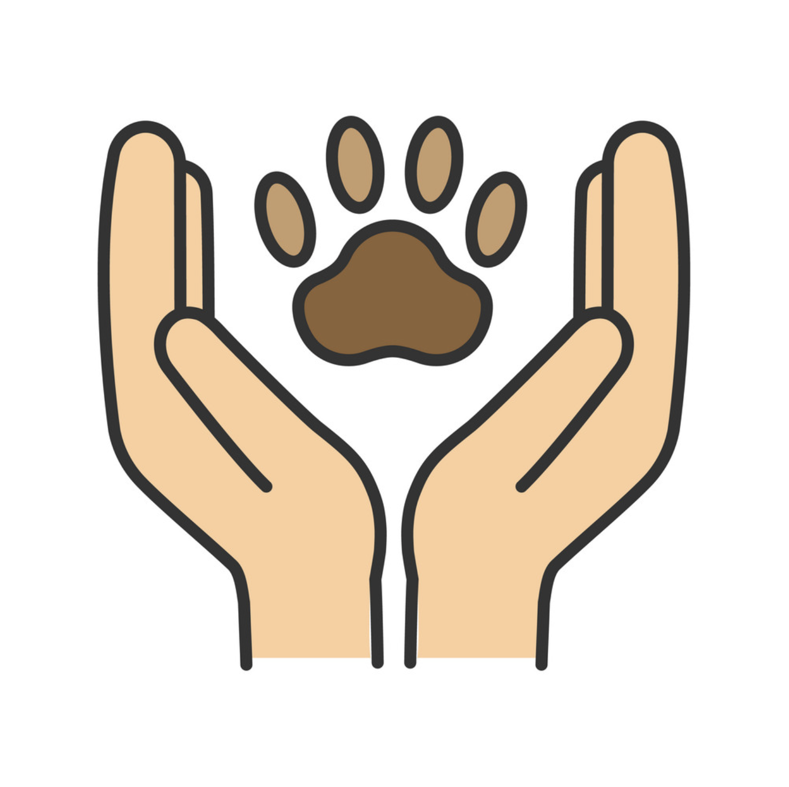

Toggle navigation sidebar
Toggle in-page Table of Contents

Sổ tay Phúc lợi Động vật
Lời mở đầu
Tổng quan về Phúc lợi động vật
Quyền và Phúc lợi động vật ở Việt Nam
Tổng quan về Phúc lợi động vật
Phúc lợi động vật trong chăn nuôi
…
Phúc lợi động vật trong cứu hộ
Phúc lợi và chăm sóc cho động vật cứu hộ
Cứu hộ và chăm sóc chó mèo
Đảm bảo phúc lợi cho khỉ trong cứu hộ
Động vật sử dụng cho mục đích khác
Mô hình du lịch thân thiện với voi tại VQG Yok Don
Sở thú
Sử dụng động vật trong nghiên cứu
Những điều ít được biết về động vật
Khả năng cảm xúc và nhận thức ở động vật
Kiến thức về chó và mèo
Hành vi nuôi dạy con ở động vật
Khả năng tri giác của cá
San hô
Những vấn đề hiện nay
Mua bán động vật ngoại lai
Tổng quan về tội phạm buôn bán, tiêu thụ Động vật hoang dã tại Việt Nam
Động vật trong lễ hội ở Việt Nam
Đạo đức và Luật pháp về đối xử với động vật
…
Vận động xã hội
…
Những khía cạnh khác
Mỹ phẩm thuần chay
Ảnh hưởng của thiết kế chuồng trại đến phúc lợi động vật nuôi nhốt
Thư viện PDFs
Bài báo
Đóng góp nội dung
Hướng dẫn đóng góp
Tiêu chuẩn viết bài
repository
open issue
Index